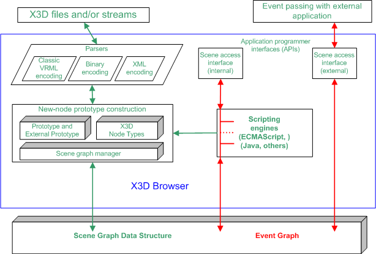

4.1.2
Insert the following text as a new paragraph immediately following Figure 4.1:
“The abstract structure of the sequence of statements that form an X3D world is specified in 7.2.5 Abstract X3D structure.”
Replace the existing Figure 4.1 and figure caption with the following:

Figure 4.1 — X3D architecture
4.4.2.2, 4th paragraph
In the first sentence, replace the word "rules" with the word "recommendations".
4.4.2.2, item h.
Replace the text of item h with the following:
'It is recommended that all inputOnly fields have the prefix “set_”, with the exception of the addChildren and removeChildren fields.'
4.4.2.2, item j.
Replace the text of item j with the following:
'It is recommended that all other outputOnly fields have the suffix “_changed” appended, with the exception of outputOnly fields of type SFBool.'
4.4.2.3, 1st paragraph
Replace the last two sentences with the follwoing text:
"Figure 4.2 depicts the object hierarchy for object types defined in this part of ISO/IEC 19775 for all versions. A specification of which object types are available for which versions may be found in Annex L Version content.
NOTE Not all object types are supported in certain component levels, profiles or versions; refer to the individual component and profile specifications in this part of ISO/IEC 19775 for details."
4.4.2.3, Figure 4.2
Replace the figure with the following:
"X3DField -+- SFBool
+- SFColor
+- SFColorRGBA
+- SFDouble
+- SFFloat
+- SFImage
+- SFInt32
+- SFMatrix3d
+- SFMatrix3f
+- SFMatrix4d
+- SFMatrix4f
+- SFNode
+- SFRotation
+- SFString
+- SFTime
+- SFVec2d
+- SFVec2f
+- SFVec3d
+- SFVec3f
+- SFVec4d
+- SFVec4f
|
+- X3DArrayField -+- MFBool
+- MFColor
+- MFColorRGBA
+- MFDouble
+- MFFloat
+- MFImage
+- MFInt32
+- MFMatrix3d
+- MFMatrix3f
+- MFMatrix4d
+- MFMatrix4f
+- MFNode
+- MFRotation
+- MFString
+- MFTime
+- MFVec2d
+- MFVec2f
+- MFVec3d
+- MFVec3f
+- MFVec4d
+- MFVec4f
X3DBoundedObject
X3DMetadataObject
X3DUrlObject
X3DFogObject
X3DProgrammableShaderObject
X3DNode
|
+- X3DProtoInstance
|
+- X3DAppearanceNode -+- Appearance
|
+- X3DAppearanceChildNode -+- FillProperties
| +- LineProperties
| |
| +- X3DMaterialNode -+- Material
| |
| +- X3DTextureNode -+- X3DTexture2DNode -+- ImageTexture (X3DUrlObject)*
| | | +- MovieTexture (X3DSoundSourceNode, X3DUrlObject)*
| | | +- PixelTexture
| | |
| | +- X3DTexture3DNode -+- ComposedTexture3D
| | | +- ImageTexture3D (X3DUrlObject)*
| | | +- PixelTexture3D
| | |
| | +- MultiTexture
| | +- X3DEnvironmentTextureNode -+- ComposedCubeMapTexture
| | +- GeneratedCubeMapTexture
| | +- ImageCubeMapTexture (X3DUrlObject)*
| |
| +- X3DTextureTransformNode -+- TextureTransform
| | +- TextureTransform3D
| | +- TextureTransformMatrix3D
| | +- MultiTextureTransform
| |
| +- X3DShaderNode -+- ComposedShader (X3DProgrammableShaderObject)*
| +- PackagedShader (X3DUrlObject, X3DProgrammableShaderObject)*
| +- ProgramShader
|
+- X3DGeometryNode -+- Arc2D
| +- ArcClose2D
| +- Box
| +- Circle2D
| +- Cone
| +- Cylinder
| +- Disk2D
| +- ElevationGrid
| +- Extrusion
| +- GeoElevationGrid
| +- IndexedLineSet
| +- LineSet
| +- PointSet
| +- Polyline2D
| +- Polypoint2D
| +- Rectangle2D
| +- Sphere
| +- Text
| +- TriangleSet2D
| |
| +- X3DComposedGeometryNode -+- IndexedFaceSet
| | +- IndexedQuadSet
| | +- IndexedTriangleFanSet
| | +- IndexedTriangleSet
| | +- IndexedTriangleStripSet
| | +- QuadSet
| | +- TriangleFanSet
| | +- TriangleSet
| | +- TriangleStripSet
| |
| +- X3DParametricGeometryNode -+- NurbsCurve
| +- NurbsSweptSurface
| +- NurbsSwungSurface
| +- X3DNurbsSurfaceGeometryNode -+- NurbsPatchSurface
| +- NurbsTrimmedSurface
|
+- GeoOrigin
|
+- X3DGeometricPropertyNode -+- X3DColorNode -+- Color
| | +- ColorRGBA
| |
| +- X3DCoordinateNode -+- Coordinate
| | +- CoordinateDouble
| | +- GeoCoordinate
| |
| +- FogCoordinate
| |
| +- HAnimDisplacer
| |
| +- X3DNormalNode -+- Normal
| |
| +- X3DTextureCoordinateNode -+- MultiTextureCoordinate
| | +- TextureCoordinate
| | +- TextureCoordinateGenerator
| | +- TextureCoordinate3D
| | +- TextureCoordinate4D
| |
| +- X3DVertexAttributeNode -+- FloatVertexAttribute
| +- Matrix3VertexAttribute
| +- Matrix4VertexAttribute
|
+- X3DFontStyleNode -+- FontStyle
|
+- MetadataDouble (X3DMetadataObject)*
+- MetadataFloat (X3DMetadataObject)*
+- MetadataInteger (X3DMetadataObject)*
+- MetadataSet (X3DMetadataObject)*
+- MetadataString (X3DMetadataObject)*
|
+- Contour2D
+- NurbsTextureCoordinate
+- X3DNurbsControlCurveNode -+- ContourPolyline2D
| +- NurbsCurve2D
|
+- ShaderPart (X3DUrlObject)*
+- ShaderProgram (X3DUrlObject, X3DProgrammableShaderObject)*
|
+- X3DChildNode -+- X3DBindableNode -+- Fog (X3DFogObject)*
| +- GeoViewpoint
| +- NavigationInfo
| +- Viewpoint
| +- X3DBackgroundNode -+- Background
| +- TextureBackground
|
+- LocalFog (X3DFogObject)*
|
+- Inline (X3DUrlObject, X3DBoundedObject)*
|
+- StaticGroup (X3DBoundedObject)*
|
+- X3DShapeNode -+- Shape (X3DBoundedObject)*
|
+- X3DGroupingNode (X3DBoundedObject)* -+- Anchor
| +- Billboard
| +- CADAssembly (X3DProductStructureChildNode)*
| +- CADLayer
| +- CADPart (X3DProductStructureChildNode)*
| +- Collision (X3DSensorNode)*
| +- EspduTransform
| +- GeoLocation
| +- GeoLOD
| +- Group
| +- HAnimJoint
| +- HAnimSegment
| +- HAnimSite
| +- LOD
| +- Switch
| +- Transform
|
+- NurbsSet (X3DBoundedObject)*
+- NurbsOrientationInterpolator
+- NurbsPositionInterpolator
+- NurbsSurfaceInterpolator
|
+- HAnimHumanoid (X3DBoundedObject)*
|
+- ReceiverPdu (X3DBoundedObject)*
+- SignalPdu (X3DBoundedObject)*
+- TransmitterPdu (X3DBoundedObject)*
|
+- X3DInterpolatorNode -+- ColorInterpolator
| +- CoordinateInterpolator
| +- CoordinateInterpolator2D
| +- GeoPositionInterpolator
| +- NormalInterpolator
| +- OrientationInterpolator
| +- PositionInterpolator
| +- PositionInterpolator2D
| +- ScalarInterpolator
|
+- X3DLightNode -+- DirectionalLight
| +- PointLight
| +- SpotLight
|
+- X3DScriptNode (X3DUrlObject)* -+- Script
|
+- X3DSensorNode -+- TimeSensor (X3DTimeDependentNode)*
| +- Collision (X3DGroupingNode)*
| +- X3DEnvironmentalSensorNode -+- ProximitySensor
| | +- VisibilitySensor
| |
| +- X3DKeyDeviceSensorNode -+- KeySensor
| | +- StringSensor
| |
| +- X3DNetworkSensorNode +- LoadSensor
| |
| +- X3DPointingDeviceSensorNode -+- X3DDragSensorNode -+- CylinderSensor
| | +- PlaneSensor
| | +- SphereSensor
| |
| +- X3DTouchSensorNode -+- GeoTouchSensor
| +- TouchSensor
|
+- X3DSoundNode -+- Sound
|
+- X3DTimeDependentNode -+- TimeSensor (X3DSensorNode)*
| |
| +- X3DSoundSourceNode -+- AudioClip (X3DUrlObject) *
| +- MovieTexture (X3DTexture2DNode, X3DUrlObject)*
|
+- X3DSequencerNode -+- BooleanSequencer
| +- IntegerSequencer
|
+- X3DTriggerNode -+- BooleanTrigger
| +- IntegerTrigger
| +- TimeTrigger
|
+- BooleanFilter
+- BooleanToggle
|
+- X3DInfoNode --+- GeoMetadata
| +- WorldInfo
|
+- X3DProductStructureChildNode -+- CADAssembly (X3DGroupingNode)*
+- CADFace (X3DBoundedObject)*
+- CADPart (X3DGroupingNode)*
* = Derived from multiple interfaces"
4.4.2.4.2, 2nd paragraph
Replace the word "three" with the word "two".
4.4.3, 2nd paragraph
Replace the first sentence with the following:
“Node names are limited in scope to a single X3D file, prototype definition, or string submitted to either CreateX3DFromString, CreateX3DFromStream, or CreateX3DFromURL browser service or a construction for SFNodes within a script.”
4.4.4.4, 2nd paragraph
Replace "DEFconstruct" with "DEF construct".
4.4.6
Delete 4.4.6.1 header.
Delete 4.4.6.2 and 4.4.6.3
Append the following text to the last sentence of the first paragraph of the remaining content and hyperlink to the specified location:
“(see 9.2.5 IMPORT statement)”.
Append the following text to the last sentence of the second paragraph of the remaining content and hyperlink to the specified location:
“(see 9.2.6 EXPORT statement)”.
4.5.3, 4th paragraph
Replace with the following text:
“In the second column, each prerequisite for a support level is listed by a
component name and a support level within that component. These table entries
indicate that,
for the browser to claim support for that level of the component, the browser
implementation shall also support the component and support
level(s) listed as a prerequisite. If there are no prerequisites, the word
"None" is specified.”
4.6
Append the following text as new subclause 4.6.3 and hyperlink the reference):
A profile consists of a collection of components at given support levels. A user may also supplement the predefined set of components for a given profile by specifying extra component statements (see 7.2.5.4 COMPONENT statement). If the user supplies additional component declarations in addition to the components and levels defined as part of the profile, the resultant components supported shall be the union of all components and levels requested. That is, a user cannot force a lower level of component conformance onto a profile by explicitly declaring the component with a lower level of support than that defined by the profile.
A profile definition shall be internally consistent. If a profile contains components that list prerequisites that are not covered by the component levels declared for that profile, the prerequisites shall not be automatically made available. Authors wishing to use these missing prerequisites shall explicitly declare the component and level required through the use of the COMPONENT statement.”
4.6.1
In the first paragraph, change "six initial" to "seven".
In the HTML, change the hyperlink destination for Annex D to "MPEG4interactive.html".
Append the following to the list of profiles:
"g. CADInterchange profile (see Annex H)"